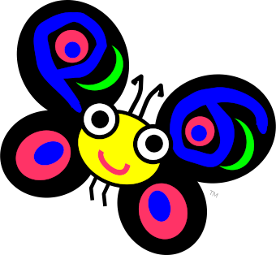
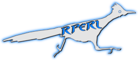
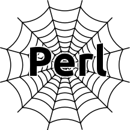

registered trademark of The Perl Foundation
The Perl Language Family
This is a list of members of the Perl programming language family. Only implementations that showed some recent activity in their code repositories as of mid-2019 have been included.
last updated: 2019-07-25
The Siblings
- Perl 5
- Direct descendant of Larry Wall's original language, maintained and incrementally evolved by a team of volunteers to this day.
- perl.org · perl5.git.perl.org/perl.git · perl5.git.perl.org/perl.git/shortlog

- Perl 6
- A top-to-bottom redesign of the language under the auspices of Larry Wall, with an implementation developed and maintained by a team of volunteers.
- perl6.org · github.com/rakudo/rakudo ·
github.com/rakudo/rakudo/commits
The Cousins
- cperl
- Reini Urban's fork of Perl 5, with the goal to modernize both language and implementation.
- perl11.org/cperl/STATUS · github.com/perl11/cperl · github.com/perl11/cperl/commits

- RPerl
- Will Braswell's optimizing compiler for a restricted subset of Perl 5.
- rperl.org · github.com/wbraswell/rperl · github.com/wbraswell/rperl/commits
- NQP
- A lower-level variant of Perl 6 used to implement the Rakudo Perl 6 compiler.
- github.com/perl6/nqp · github.com/perl6/nqp/commits
- Perlito
- Flávio S. Glock's compiler collection implementing subsets of Perl 5 and Perl 6.
- fglock.github.io/Perlito · github.com/fglock/Perlito · github.com/fglock/Perlito/commits

- WebPerl
- Not a language variant as such, but Hauke Daempfling's port of Perl 5 and Rakudo Perl 6 to WebAssembly.
- webperl.zero-g.net · github.com/haukex/webperl · github.com/haukex/webperl/commits